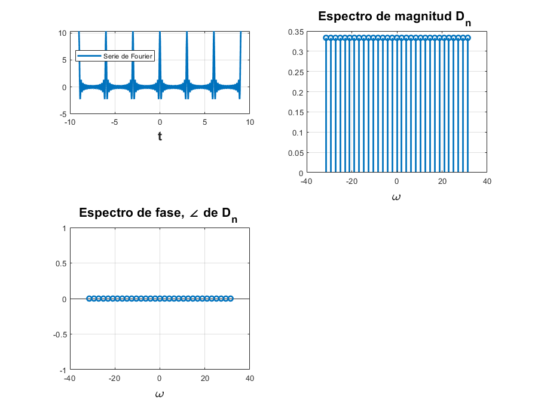

Practica 5 Series de Fourier en tiempo continuo
UNIDAD PROFESIONAL INTERDISCILIPINARIA EN INGENIERIA Y TECNOLOGIAS AVANZADAS
Grupo: 2TV2
Asignatura: Señales y Sistemas
Integrantes:
Trejo Merlin Ivan
Vazquez Cruz Rodrigo
Profesor:
Dr. Rafael Matinez Martinez
Contents
Objetivos
1.-Realizar gráficas de series de Fourier exponenciales y trigonométricas en tiempo continuo
2.-Manipulación de instrucciones en MATLAB
3.-Calculo númerico de los coeficientes de Fourier
Introducción
[1] Cálculo Numérico de
Podemos calcular numericamente usando la DFT (la transformada discreta de Fourier), que usa las muestras de una señal periódica $ en un periodo. El intervalo de muestreo es segundos. Por lo tanto, hay un número de muestras en un periodo .
(6.96)
Donde es la -ésima valor de y
(6.97)
En la práctica, es imposible hacer que al calcular el lado derecho de la ecuación (6.96). Podemos hacer que sea pequeña, pero no 0, lo que hace que los datos aumenten sin límite. Por lo tanto, igonoraremos el límite de en la ecuación (6.96) con la comprensión implícita de que es razonablemente pequeño. Cualquier valor diferente de cero de producira un error de cálculo, que es inevitable en cualquier evaluación numérica de una integral. El error resultante de distinto de cero se denomina error de aliasing. Por lo tanto, podemos escribir la ecuación (6.96) como:
(6.98a)
Ahora, de la ecuación(6.97), Por lo tanto, , y de la ecuación (6.98a), se deduce que:
(6.98b)
La propiedad de periodicidad, , significa que más allá de , los coeficientes representan los valores para las negativas. Por ejemplo, cuando . El ciclo se repite nuevamente desde en adelante.
Podemos usar la FFT (la transformada rápida de Fourier) para calcular el lado derecho de la ecuación (6.98b). Nosotros utilizaremos MATLAB para implementar el algoritmo FFT. Para este propósito, necesitamos muestras de durante un período que comience en . En este algoritmo, también es preferible (aunque no necesario) que sea una potencia de 2, es decir , donde m es un número entero.
Desarollo
Para el desarrollo se tienen que resolver cada uno de los siguientes problemas comenzando una nueva sección (para la publicación) en cada uno de ellos.
Para cada problema debes de realizar
- Realizar el programa de la serie que se indica
- Gráfica de la serie de Fourier en un intervalo que muestre 5 repeticiones
- Gráfica de la señal y la serie de Fourier para 4 armonicos
- Gráfica del error
- Gráfica de la energía del error
- Espectro de magnitud para 4 armonicos
- Espectro de fase para 4 armonicos
- Todo lo anterior para 15 armonicos
Ejemplo 6.1
Con serie y espectro trigonometrico, no es necesario entregar el código, solo la aplicación al problema especifico, debe de indicar la función y los valores de sus coeficientes (sin incluir el procedimiento)
Ejemplo 6.2
Con serie y espectro exponencial y A=3, no es necesario entregar el código, solo la aplicación al problema especifico, debe de indicar la función y los valores de sus coeficientes (sin incluir el procedimiento)
- 4 armonicos
Usando la sigueinte formula para obtener , tenemos:
clear; close all; clc;
d0=0;
dn=@(n) (-12*sin(n*pi/2)*j)/(n^2*pi^2);
t0=-1/2;
tf=3/2;
f=@(t) 6*t.*(t>=-1/2 & t<=1/2) + 6*(1-t).*(t>1/2 & t<=3/2);
armo=4;
a=-6;
b=6;
sfc(t0,tf,dn,d0,f,armo,a,b)
- 15 armonicos
clear; close all; clc;
d0=0;
dn=@(n) (-12*sin(n*pi/2)*j)/(n^2*pi^2);
t0=-1/2;
tf=3/2;
f=@(t) 6*t.*(t>=-1/2 & t<=1/2) + 6*(1-t).*(t>1/2 & t<=3/2);
armo=15;
a=-6;
b=6;
sfc(t0,tf,dn,d0,f,armo,a,b)
Ejemplo 6.4
Con serie y espectro exponencial, no es necesario entregar el código, solo la aplicación al problema especifico, debe de indicar la función y los valores de sus coeficientes (sin incluir el procedimiento)
- 4 armonicos
clear; close all; clc;
d0=1/2;
dn=@(n) (1/(2*pi*n*j))*(exp((n*j*pi)/2)-exp((-n*j*pi)/2));
t0=-pi;
tf=pi;
f=@(t) 1*(t>-pi/2 & t<=pi/2);
armo=4;
a=-15;
b=15;
sfc(t0,tf,dn,d0,f,armo,a,b)

- 15 armonicos
clear; close all; clc;
d0=1/2;
dn=@(n) (1/(2*pi*n*j))*(exp((n*j*pi)/2)-exp((-n*j*pi)/2));
t0=-pi;
tf=pi;
f=@(t) 1*(t>-pi/2 & t<=pi/2);
armo=15;
a=-15;
b=15;
sfc(t0,tf,dn,d0,f,armo,a,b)
Ejemplo 6.5
Con serie y espectro exponencial, no es necesario entregar el código, solo la aplicación al problema especifico, debe de indicar la función y los valores de sus coeficientes (sin incluir el procedimiento)
- 4 armonicos
clear; close all; clc;
d0=0.504;
dn=@(n) 0.504/(1+4*n*j);
t0=0;
tf=pi;
f=@(t) exp(-t/2);
armo=4;
a=-9;
b=9;
sfc(t0,tf,dn,d0,f,armo,a,b)
- 15 armonicos
clear; close all; clc;
d0=0.504;
dn=@(n) 0.504/(1+4*n*j);
t0=0;
tf=pi;
f=@(t) exp(-t/2);
armo=15;
a=-9;
b=9;
sfc(t0,tf,dn,d0,f,armo,a,b)
Ejemplo 6.7
Con serie y espectro exponencial y sin incluir la gráfica de f, error ni energía del error, no es necesario entregar el código, solo la aplicación al problema especifico, debe de indicar la función y los valores de sus coeficientes (sin incluir el procedimiento)
- 4 armonicos
clear; close all; clc;
d0=1/3;
dn=@(n) 1/3;
t0=0;
tf=3;
f=@(t) dirac(t);
armo=4;
a=-9;
b=9;
sfce(t0,tf,dn,d0,f,armo,a,b)
- 15 armonicos
clear; close all; clc;
d0=1/3;
dn=@(n) 1/3;
t0=0;
tf=3;
f=@(t) dirac(t);
armo=15;
a=-9;
b=9;
sfce(t0,tf,dn,d0,f,armo,a,b)
 Ejemplo C6.2
Elabore un código similar al COMPUTER EXAMPLE C6.2 que se encuentra al final de la sección 6.2 de Lathi para el Ejempo 6.2 con los datos indicados anteriormente (no utilice inline)
Ejemplo Trapecio
% % function TC=trapecio(f,a,b,n) % f0=subs(f,a); % fh=subs(f,b); % h=(b-a)/n; % fs=0; % for i=1:a+h*i; % x(i)=a+h*i; % fs=fs+subs(f,x(i)); % % end % integral=0.5*h*(f0+2*fs+fh)
Codigo del trapecio
function [intAprox] = trapecio(f_t, cantTrap, minT, maxT) f0 = f_t(minT); fn = f_t(maxT); h = (maxT - minT)/cantTrap; fs = 0; for t = 1:cantTrap-1 xn(t) = minT + h*t; fs = fs + f_t(xn(t)); end intAprox = (h/2)*(f0 + 2*fs + fn); end
Codigo de Lathi
T_0 = 3; N_0 = 256; T = T_0/N_0; t = (0:T:T*(N_0-1))'; M = 10;
x = exp(-t/2); x(1) = (exp(-pi/2) + 1)/2;
D_n = fft (x)/N_0; n = [-N_0/2:N_0/2-1]';
clf; subplot (2, 2, 1); stem(n, abs(fftshift (D_n)),'k');
axis ([-M M -.1 .6]); xlabel('n'); ylabel('|D_n|');
subplot (2, 2, 2); stem(n, angle(fftshift(D_n)),'k');
axis([-M M -pi pi]); xlabel ('n'); ylabel('\angle D n [rad]');
n = [0:M]; C_n(1) = abs(D_n(1)); C_n(2:M+1) = 2*abs (D_n(2:M+1));
theta_n(1) = angle(D_n(1)); theta_n(2:M+1) = angle(D_n(2:M+1));
subplot (2, 2, 3); stem(n,C_n,'k');
xlabel ('n'); ylabel('C_n');
subplot (2, 2, 4); stem(n,theta_n,'k');
xlabel ('n'); ylabel('\theta n [rad]');
trapecio('exp(-x/2)',-4,4,10);Referencias
1. Lathi, B. P., & Green, R. A. (2005). Linear systems and signals (Vol. 2). New York: Oxford University Press.
2. Oppenheim, A. V., Willsky, A. S., & Nawab, S. H. (1998). Señales y sistemas. Pearson Educación.
3. Moore, H. (2012). MATLAB®. MATLAB for Engineers, Third Edition. Upper Saddle River, NJ: Pearson Education, Inc, 1-8.
El código de esta publicación lo puedes encontrar en el siguiente enlace